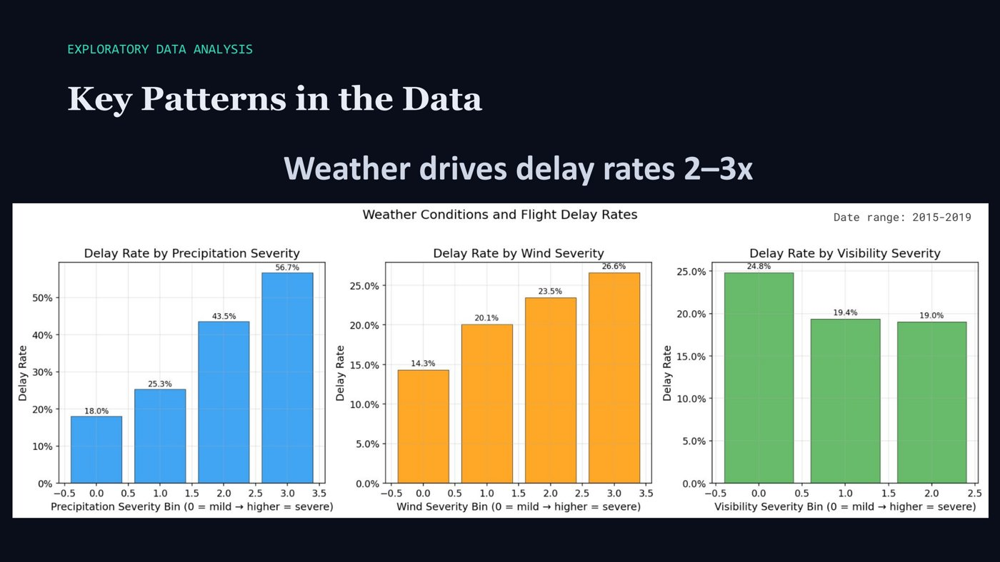
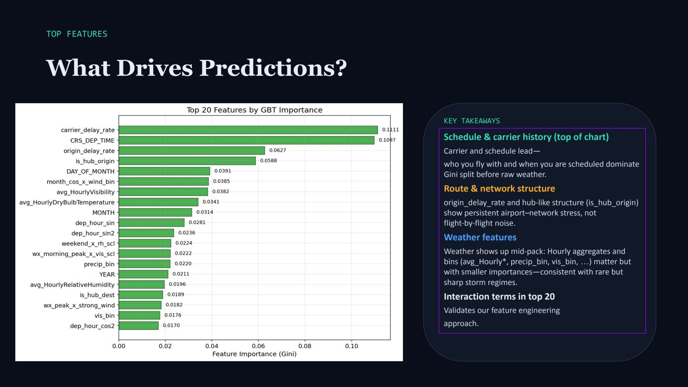

UC Berkeley MIDS, Machine Learning at Scale (W261), Spring 2026 · team of five
MayD(el)ay
Predicts whether a US flight will leave at least 15 minutes late, using only what's known an hour before departure: the schedule, how the airport has been doing lately and the latest weather.


The problem
Delays cost US airlines around $10 billion a year. Missing a delay (a stranded passenger, a crew that runs out of working hours, a knock on effect for later flights) costs much more than a warning for a flight that turns out fine. So we scored our models with F2, a measure that cares twice as much about catching delays as about avoiding false alarms. Only about one flight in five is delayed, so a model that never warns would be right 80% of the time and still be useless.
My part
My job was keeping the data honest and the pipeline running at scale. I checked every column to make sure the models only saw information available before departure, not things recorded afterwards, and I split the data by time into training, validation and test sets. In the later phases I owned the step that turns raw data into model inputs: filling in missing values, scaling, and combining about a hundred features for 31.7 million flights. I saved it in a reusable form so the rest of the team could train on it without rebuilding it, and I helped with the modelling. I led the final phase, made the visuals for our final presentation and revised the final report.
How it works
- Flights plus weather. Records of every US domestic flight from 2015 to 2019, matched with weather from the nearest station over the three hours ending an hour before departure.
- No cheating. We removed more than 25 columns that are only known after takeoff, set the scaling using training data only, and kept 2019 aside as a test year the models never saw.
- Eight kinds of features: time of day and calendar, holidays, how busy the airport is, how late the route and airline have been recently, weather, facts about the airport, and combinations of these. About a hundred in all.
- Six kinds of models, from simple to complex, described below.


The models and how they differ
Every model learned from the earlier years, with extra handling because delays are rare. Its warning threshold was set using the validation data, and then it was tested once on 2019.
- Logistic regression is the simple starting point. It's quick to train (about 20 minutes) and easy to explain, but it looks at each feature on its own and can't spot combinations.
- Random forest averages the votes of many decision trees, each trained on a random part of the data. It picks up combinations on its own and was the fastest to train, at about 7 minutes.
- Gradient boosted trees build trees one at a time, each fixing the mistakes of the ones before. They were best at telling delayed flights from on time ones, but took about 7.5 hours to train and tune.
- Neural networks in PySpark can train across many machines but have few settings to adjust. The smallest network beat the bigger ones, but with default settings it caught only 57% of delays.
- Neural networks in PyTorch gave us full control over how the network is built and trained, which we used to test different sizes and settings.
- A Transformer, the kind of model behind modern AI chatbots, adapted for tables of data. It scored about as well as the best trees but didn't beat them.
| Model | Threshold | F2 | Recall | Precision | AUROC | Training |
|---|---|---|---|---|---|---|
| Logistic regression | 0.5 | 0.522 | 85% | 20% | 0.661 | 20 min |
| Random forest | 0.4 | 0.523 | 85% | 21% | 0.660 | 7 min |
| Gradient boosted trees | 0.2 | 0.527 | 81% | 22% | 0.681 | 7.5 h |
| PySpark neural network | 0.3 | 0.521 | 94% | 19% | 0.651 | 2 h |
Results on the 2019 test year
- 31.7M
- flights, 2015 to 2019
- 0.527
- F2, gradient boosted trees
- 81%
- of delayed flights caught
- 0.68
- AUROC
Lessons learned
A yes or no question
This is a classification problem: for each flight the model answers one yes or no question, “will it leave 15 minutes late or more?” It doesn't try to guess how many minutes late. Under the hood it gives a probability, and a threshold turns that into a yes or no. A low threshold warns more often, catching more delays but raising more false alarms.
Why F2 and recall, not accuracy or F1
- Accuracy is misleading here. Only about one flight in five is delayed, so a model that always says “on time” is 80% accurate and catches nothing.
- Recall is the share of real delays the model catches. Precision is the share of its warnings that turn out to be real delays.
- F1 treats both as equally important, but they aren't. A missed delay strands passengers and crews, while a false alarm mostly means someone checks on a flight that turns out fine.
- F2 counts recall twice as much as precision, which matches that difference in cost. So we tuned every model for F2, accepting more false alarms to catch more delays.
Data leakage, and how we prevented it
Data leakage is when a model gets to see information it wouldn't have at the moment it makes a prediction. The obvious case is the actual departure delay itself: give a model that column and it will look perfect, because it's reading the answer. Leakage makes a model look great on paper and fail in real use. We guarded against it at every step:
- Removed every column recorded after departure, more than 25 of them, such as actual departure time, takeoff time and taxi time.
- Split the data by time, not at random. The model trains on earlier dates and is tested on later ones, so it never learns from the future.
- Learned every statistic from the training data only. Averages, delay rates, busy airport thresholds and scaling values were all computed on training data, then frozen and reused for validation and test.
- Used weather only up to an hour before departure, the latest moment a real prediction could be made.
- Touched the 2019 test year only once, at the very end, after all settings and thresholds had been chosen on validation data.
Why we chose these models
- Logistic regression is the simplest model that gives a probability. It sets the bar every other model has to beat, and it's easy to explain.
- Random forest and gradient boosted trees are known to work well on tables of data. They find combinations of features on their own, like “evening flight on a holiday from a busy hub”, which a linear model can't.
- Neural networks were a requirement from our client, and we wanted to know whether they could beat trees at this scale. We built them twice, in PySpark to train on all the data and in PyTorch for more control.
- The Transformer tested whether a modern architecture adds anything on this kind of data. It matched the trees but didn't beat them.
Which models needed scaling, and why
Scaling puts every feature on a similar range, so that distance in miles (in the thousands) doesn't drown out a holiday flag (0 or 1).
- Logistic regression needs it, so that its weights and its penalty for large weights treat every feature fairly.
- Neural networks need it most. They learn by small steps, and those steps only work well when every input sits on a similar range. Without scaling, training is slow and unstable.
- Trees don't need it. A tree only asks questions like “is the wind above 20 mph?”, which depend on the order of values, not their size. So gradient boosted trees got the original values. Random forest didn't need scaling either, but used the scaled data so its results were directly comparable with logistic regression's.
- Weather got special scaling. We compared each reading with the median of the previous seven days, which says “unusually windy compared with the past week” and isn't thrown off by one extreme storm.
Why different pipelines
Because the models need their inputs prepared differently, we built three pipelines from the same features. One scales the data for logistic regression and random forest. One keeps the original values for gradient boosted trees. The neural networks had their own, which scales the data and keeps fewer on time flights for training. The two main pipelines were saved as ready datasets, so whoever trained a model could load it directly instead of reprocessing 31.7 million flights every time.

Target encoding
Airlines, airports, routes and departure hours are categories, not numbers, and there are a lot of them: 368 origin airports alone, and even more routes. Giving every airport its own yes or no column would add hundreds of mostly empty columns. Instead, target encoding replaces each category with its historical delay rate, so an airline becomes, say, “late 22% of the time”. That's one column, it's meaningful to the model, and the airline and route delay rates ended up among its most important features. The rates were computed on training data only, and anything not seen in training got the overall average.
Filling in missing values
- Weather readings: filled with the median of the previous seven days of training data. The median isn't skewed by a single storm, the seven day window keeps it seasonal, and it only uses the past.
- Pressure and wet bulb temperature, missing for 40% to 60% of readings: calculated from the values that were there, using physics (elevation, temperature and the Stull formula), with a flag marking each filled value.
- Precipitation and airport traffic counts: filled with zero, because no report almost always means no rain or no scheduled flights.
- The previous flight's delay: zero when there's no earlier flight on record for that plane, since there's nothing to be late.
- Flights with no answer, cancelled or diverted ones (1.8%), were removed, since there's no “late or not” to learn from.
What an ablation study is
An ablation study takes one piece out and measures what changes. We removed each of the eight feature families in turn, retrained a neural network on a 300,000 flight sample and measured how much F2 dropped. Time of day and calendar features mattered by far the most. Congestion, airport facts, weather and combinations each mattered about a third as much. One family, the composite indices, slightly helped when removed, meaning it added noise.

Big takeaways
- The warning threshold mattered more than the model. With default settings the models missed about two thirds of delays. Once the threshold was tuned, logistic regression, random forest and boosted trees scored almost the same.
- Trees beat neural networks on this kind of data. The neural networks only caught up after tuning, and took much longer to train.
- One simple fact says a lot. If the plane's previous flight left late, the chance of a delay goes from 17% to 28%.
- There's a limit. Mechanical problems, crew shortages and air traffic control don't show up in schedules or weather, so catching most delays means about four false alarms for every real one.
Built with
- PySpark
- Spark MLlib
- Databricks
- PyTorch
- Python
- BTS flight data
- NOAA weather data